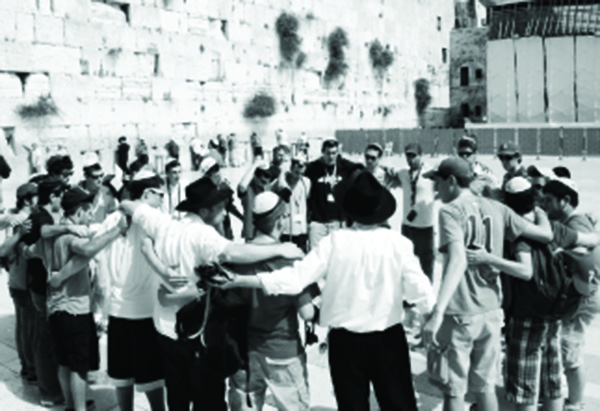

The Busiest Chabad House in the World
There is hardly any tourist, Jewish or not, who does not visit the Kosel. * I spent an entire Friday at the t’fillin stand at the Kosel, which is actually a Chabad House in every respect. * Shabbos spread its wings, but not only didn’t the activity stop, it began again in “Shabbos mode.” * Join me for a day packed with surprises at the Chabad House at the Wall.

There were hundreds of people davening at the Kosel that Friday morning. There were Jewish tourists from all over the world, along with soldiers who came to fortify their spiritual strength and to pray that they return home safely. There were also numerous gentile tourists, Africans and Chinese, Indians and Italians, Americans and Russians. The fulfillment of “all the nations will gather.” This is the place from where the Sh’china does not budge.
The most famous t’fillin stand in the world opens at dawn. Despite the early hour, R’ Yosef Halperin, the director of the Chabad House, and R’ Shmuel Weiss, one of the regular helpers, are there. They are constantly busy putting t’fillin on with thousands of Jews. For many of them, this is the first time. Often, the putting on of t’fillin leads to deep conversations or guidance in how to write to the Rebbe through the Igros Kodesh.
Like the shluchim, I also invited Jews to the stand to put on t’fillin. This enabled me to personally experience what this shlichus is like, the enormous satisfaction, the emotional reaction of visitors, and the miracles that take place.
Every pair of Lubavitcher hands is welcome, even if he is a reporter. The reason for his being there doesn’t matter. “Action is the main thing,” and there is barely time to talk.
FROM TOURIST TO BEN TORAH
The willingness of visitors to put on t’fillin is astonishing. Their Pintele Yid is aroused by the sight of the remnant of our Mikdash. Sometimes, all that is needed is the right word along with a warm glance, eye to eye, heart to heart.
The stand, which is a sort of covered metal wagon, contains dozens of pairs of t’fillin and has brochures on Judaism and the Geula. There are papers and pens, and kippot of course. Soldiers and policemen, Israelis and foreigners, young and old, simple people and sophisticated people, surround the stand. Most of them came over on their own. I hardly had any time to talk or ask anybody about their work, but it’s really unnecessary since the place speaks for itself.
A devoutly observant Jew comes over. To my surprise, he waves a friendly hello to R’ Weiss who is busy putting t’fillin on with an American tourist and takes a pair of t’fillin and gets to work. Sometimes, all it takes is alertness, curiosity and a gentle approach, and you discover an incredible story.
This man, by the name of Dovid, came to the Kosel seven years ago. David (as he was known) was an American tourist who was not religiously observant. He barely knew the significance of the Kosel. His ignorance was so great that he took pictures of the buildings opposite the Kosel instead of the Kosel itself.
“R’ Weiss,” he said, “came over to me and explained the holiness of the Kosel and suggested that I take a picture of it. As strange at it seems, this short exchange between us motivated me to investigate my religion. I knew that I was a Jew and that there is deep significance to the words, ‘I am a Jew,’ but I didn’t know what that was. I stayed in touch with R’ Weiss via phone and mail, and he answered all my questions and directed me.
“I made aliya two years ago and went to a baal t’shuva yeshiva. I’ve gotten married and have a precious little daughter and it all began with a visit to the Kosel. I try, each time I come here, to give back a little of what I received.”
THE HOLOCAUST SURVIVOR
The cacophony of voices, languages and dialects can be dizzying. Every minute a Jew from some other foreign country appears. It is amazing each time to see to what extent the Rebbe’s mission to “compel all Israel to go in it [the ways of Torah]” pertains to nearly every Jew. One tourist spoke about his connection with the shliach in Switzerland where he lived. There are also Israeli visitors who excitedly tell about their visits to Chabad Houses in India, Europe, Australia or Thailand. There are regards from shluchim all over the world. For long moments I forgot that I came as a reporter. I personally experienced what the shluchim respond when you try to get them to tell miracle stories from the t’fillin stand: “There’s so much, it’s endless. Every day and every minute is an ongoing book, but I can’t think of something specific for you right now.”
The stand is manned by a number of Lubavitchers who speak various languages. There are R’ Shmuel Weiss who speaks English, R’ Dovid Kuplik who speaks Russian (and knows how to speak to people with a Russian mentality), R’ Dovid Cohen who speaks French, R’ Aharon Naaka who speaks Spanish, and R’ Chaim Goldstein who speaks Yiddish.
A young man, coming down the ramp, looks American. The kippa he wears looks as touristy as the rest of his get-up. He pushes a man in a wheelchair. R’ Goldstein goes over to them and the conversation takes place in Yiddish. No, says the elderly gentleman. He does not want to put on t’fillin. The last time he put on t’fillin was when he was a young boy, before the war. He davened with his father and grandfather who were “fine, Yiddishe, frum” people, but he did not see G-d in the Holocaust and they were murdered.
R’ Goldstein doesn’t get into a debate. He turns the conversation to the connection the man does have with Hashem. It seems that the conversation, conducted in mama lashon, touches him.
“Do you know R’ Cunin from California?” the man asked, and he told about his close connection with the shliach and about his involvement with the Chabad House. “Tz’daka is a big mitzva, is it not?” he asks/states in a rich Polish Yiddish.
The brief conversation ends with R’ Goldstein asking him to send regards to R’ Cunin. The man and his grandson continue to the Kosel. A quarter of an hour later, they stop at the stand again. The old man is crying and he says, “I want to put on t’fillin. I want to give the Nazis a real knock-out. Here in Yerushalayim, at the Western Wall. We have a Yiddishe land, I’m alive, I have a fine family …” and he put on t’fillin.
NOT A MOMENT’S REST
The Yerushalmi cold did not make our lives easy. Despite the growing daylight the temperature plummeted. I wrapped my coat closer around myself. The thought occurred to me that the cold might dissuade people from rolling up their sleeves for t’fillin. One of the men working there saw me tightening the coat and smiled. He understood.
“There are colder days and yet we never stop working. Not in freezing cold, not in the rain or snow, not during vacation time and not during the hot summer.”
It occurred to me again that it’s all in your mind; if you understand that every Jew needs and wants to put on t’fillin, then the people you approach will understand it too.
“We have an enormous responsibility,” said R’ Halperin. “You have no idea what tremendous results can be accomplished with t’fillin or even a short conversation with Lubavitcher Chassidim here at the Wall. We get endless feedback from shluchim about their mekuravim that were completely estranged from religious practices who began taking an interest or putting on t’fillin because of Chabad at the Kosel. Sometimes, as ironic at it sounds, it could even come as a result of a refusal here at the stand.”
It is astonishing to discover how great the interest in putting on t’fillin is. It happened more than once that when I approached someone and asked if he wants to put on t’fillin, he refused. But then, on his way back from the Kosel, he was willing to do so. The k’dusha, the emotions, and the atmosphere caused him to rethink it and to decide that he wanted to do something to express his connection with Hashem.
A noisy group of foreign kids approached the Kosel. It was hard to miss that they were from Taglit/Birthright. The counselor, an old acquaintance of R’ Weiss, brings the group straight to him. He reminds him that another group will be coming in the evening for Kabbalas Shabbos with Chabad, near the Kosel.
The excited youngsters stood in line to put on t’fillin. I suddenly realized how much work there is to be done at this t’fillin stand. R’ Dovid Cohen, who was standing next to me, informed me that this was a “quiet day.” Busy days are weekdays in the middle of the summer or when the gentiles celebrate the New Year and numerous tourists from all over the world visit. Other busy days are when there are IDF ceremonies at the Kosel like the swearing-in of new soldiers who completed basic training. They receive their guns and (l’havdil) a Tanach.
“On days like that, when friends and relatives of the soldiers come, we don’t have a second to breathe. On a day like that we can put t’fillin on with thousands of people.”
Within the group, which numbers about twenty boys and their soldier escorts for security, there are Americans and people from Western Europe, Brazil, Argentina, and even India. The connection between those Lubavitchers at the stand who speak their language and the boys is amazing. You sense the fulfillment of the prophecy of “kibbutz galuyos” when you hear the Shma recited in so many accents. For many of the boys, this is the first time in their lives that they are putting on t’fillin.
“There are days when we have eight or even ten people who never put t’fillin on before. Every Jew who passes the stand goes away with a page of the Shma in his language, and a brief explanation about the significance of t’fillin and t’filla for the Geula.
FROM “PERPETUAL BOOTH” TO CHABAD HOUSE
The idea to publish a brochure to give out to tourists came from the Rebbe himself when he announced Mivtza T’fillin in 5727. Since I am not yet made of the special stuff which those who work regularly at the t’fillin stand are made of, I take a break. I sat down and watched the stand from a distance while looking at the brochure.
The Rebbe referred to this t’fillin stand as a “perpetual booth.” It began over 45 years ago, on Shabbos Mevarchim Sivan 5727, a few days before the outbreak of the Six Day War. The Rebbe asked the Chassidim to take to the streets and to help people put on t’fillin “which is the only mitzva that is compared to the entire Torah and has a special quality to enable the victory of Am Yisroel in war.”
A few days later, in the middle of the war on 28 Iyar, Chabad Chassidim, like many others, tried to reach the Kosel. The first time that Mivtza T’fillin took place at the Kosel was in Sivan 5727.
R’ Benzion Grossman and R’ Moshe Aharon Wilhelm managed to reach the Wall. Although they had not brought t’fillin along with them, they asked some religious soldiers for t’fillin. R’ Grossman told Beis Moshiach, “Hardly anyone refused to put on t’fillin, thus expressing feelings of thanks to Hashem. The soldiers stood on a long line to put on t’fillin. We read the Shma with each one and immediately went on to the next soldier.”
A report was sent to the Rebbe, and a few days later, on 21 Sivan, Tzach received a response in which the Rebbe suggested a permanent t’fillin stand, the printing of a small page with the brachos and Shma to be given out for free, and the sale of checked t’fillin at a minimal price. The Rebbe also recommended printing an explanatory brochure about the importance of putting on t’fillin, and having Siddurim and T’hillim, Tanyas and kippot there.
The mashpia R’ Moshe Weber a”h ran the stand for many years. Upon his passing, R’ Yosef Halperin was chosen to replace him.
THE JEWISH PASTOR PUT ON T’FILLIN
Upon returning to the stand, I got a bonus. I got to see the tail-end of a moving scene. An older Israeli was taking off t’fillin and he said, “After my bar mitzva, I promised my rabbi that I would put on t’fillin every day. You just now reminded me of my promise. With G-d’s help, I will start doing it now.”
R’ Weiss told the following, “Five years ago, I was putting t’fillin on with someone when I noticed an older Jew standing and watching from a distance. He looked curious but made it clear he was just looking. I motioned to him but he declined.
“I decided to go over to him. He repeated the standard lines, ‘It’s not for me. I’m not interested. Thanks.’
“I put my hand on his shoulder and guided him over to the stand. I don’t remember what I said to him, but I felt that Hashem had put the right words in my mouth.
“When I began putting the t’fillin on him, he said emotionally, ‘I’ll tell you the truth. This is the first time I’m putting on t’fillin.’
“I’ve been in touch with him every since. His Jewish name is Hershel and he went with his family to the US from Vienna after the war. There weren’t many Orthodox Jews where they lived. For Yom Kippur, his father wanted to daven in a shul. They went to a Reform or Conservative temple and to his surprise there was a guard there who did not allow people in without a ticket. His father tried to convince him, ‘But we’re Jews and we came to pray!’ but his words fell on deaf ears.
“His father was so offended that he decided, ‘If this is Judaism in the US, I want no part of it. He raised his son Hershel in total estrangement from Judaism. Hershel married a non-Jew and became a pastor in a church r”l.
“When I heard his story, I understood why he refused to put on t’fillin. I also saw what a tremendous z’chus it is to work here, at this t’fillin stand at the Kosel, which literally saves lives. Hershel has taken a moderate interest in Judaism. He still hasn’t left the non-Jewish lifestyle or the clergy, but he has come to the Kosel again. He comes over on his own to put on t’fillin, and if he’s with other Jews, he tells them to put on t’fillin too.”
MIVTZA T’FILLIN WITH SIRTUK AND GARTEL
The hours passed in a flash. Shabbos was approaching. On weekdays, the stand is manned from sunrise to sunset. As far as they are concerned, just as no Jew will remain in galus, we cannot allow any Jew, now, in these final moments of galus, to remain in a galus of Avodas Hashem.
As I walked back to the Kosel through the alleyways of the Old City, I passed Rechov Chabad and the Tzemach Tzedek shul. It was almost Shabbos and I sensed that remarkable transitional period between weekday and Shabbos at the Kosel.
Shabbos had almost arrived. Chassidim dressed for Shabbos, alongside young men in jeans and little kippot, alongside children with curled peios, walked to the Kosel for Kabbalas Shabbos. I was unsure that there would be any activity at the t’fillin stand but it turned out there was. There were many tourists and soldiers.
Already dressed in my sirtuk and gartel I helped out at the stand. On another Erev Shabbos like this, three men from one family put on t’fillin; a grandfather, son and grandson. They had an impromptu bar mitzva then and there. There were no candies or gifts, but there was spirited dancing.
These moments, right before Shabbos, are used to chap arain more t’fillin, but pens and papers are collected so as to prevent chilul Shabbos by innocent tourists. The t’fillin are then wrapped and locked in the closet under the stand and that’s it. Shabbos comes in over Yerushalayim and the Kosel, over the tourists and locals, over the Chassidim and B’nei Torah, over the Sephardim and Ashkenazim, Jews and (l’havdil) non-Jews.
BRINGING IN SHABBOS AT THE KOSEL
As arranged ahead of time with R’ Weiss, a group of Taglit students came to the stand, which was full of Siddurim in many languages. Other students and long time tourists, mostly American, joined them. They came to enjoy Kabbalas Shabbos with Chabad at the Kosel.
R’ Weiss knows how to connect with them. Together, they sang “Lecha Dodi.” We danced together, souls united. R’ Weiss told them the parsha with an impressive delivery. He depicted the prophecies of the Geula and inspired the young people with the powerful need to pray for the Geula and the revelation of Moshiach.
He bluntly though sensitively brought up the burning issue of assimilation. He spoke forthrightly, telling them they must each marry a Jew.
Their counselor stood next to me and said, “We take these guys to a lot of places in Eretz Yisroel. For ten days, they visit many tourist sites, kibbutzim and army bases, Har Hertzl, Yad VaShem, Rabin Square, the Knesset, Masada, the Dead Sea, and more. And I must tell you that the most moving visit is here at the Kosel, when they meet Lubavitchers and put on t’fillin or daven on Shabbos.”
The counselor told me that one of the goals of Taglit is to fight assimilation.
“For some reason, when they hear this message from Shmuel [Weiss], who says it simply and sincerely, they don’t just understand that it’s important to marry Jewish; they connect with their Judaism. He gets them to a point where it’s impossible to think otherwise.”
As though to affirm what he said, one of the fellows stayed behind to talk to R’ Weiss. He told R’ Weiss that he has a gentile girlfriend and he understands this can’t continue, but how should he end it?
R’ Weiss asks him to wait while he arranges host families for the tourists, soldiers and students. He takes some guests for himself too. As I said, the outreach work doesn’t stop on Shabbos; it goes into Shabbos mode.
I told R’ Halperin and all those who work at the stand, “I envy you!”
Mmarad. "The Busiest Chabad House in the World." Beis Moshiach, no. 869 (February 13, 2013).